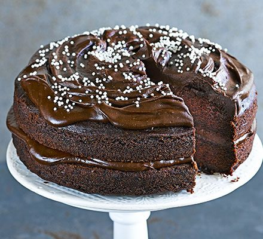

e
Vegan Chocolate Cak

Rich and indulgent with a creamy frosting. You'll never guess it's gluten free and without eggs or dairy.
Go back
Ingredients
Sponge
- a little dairy-free sunflower spread, for greasing
- 1 large ripe avocado (about 150g)
- 300g light muscovado sugar
- 350g gluten-free plain flour
- 50g good-quality cocoa powder
- 1 tsp bicarbonate of soda
- 2 tsp gluten-free baking powder
- 400ml unsweetened soya milk
- 150ml vegetable oil
- 2 tsp vanilla extract
Frosting
- 85g ripe avocado flesh, mashed
- 85g dairy-free sunflower spread
- 200g dairy-free chocolate, 70% cocoa, broken into chunks
- 25g cocoa powder
- 125ml unsweetened soya milk
- 200g icing sugar, sifted
- 1 tsp vanilla extract
- gluten-free and vegan sprinkles, to decorate
Instructions
- Heat oven to 160C/140C fan/gas 3. Grease two 20cm sandwich tins with a little dairy-free sunflower spread, then line the bases with baking parchment.
- Put 1 large avocado and 300g light muscovado sugar in a food processor and whizz until smooth.
- Add 350g gluten-free plain flour, 50g cocoa powder, 1 tsp bicarbonate of soda, 2 tsp gluten-free baking powder, 400ml unsweetened soya milk, 150ml vegetable oil and 2 tsp vanilla extract to the bowl with ½ tsp fine salt and process again to a velvety, liquid batter.
- Divide between the tins and bake for 25 mins or until fully risen and a skewer inserted into the middle of the cakes comes out clean.
- Cool in the tins for 5 mins, then turn the cakes onto a rack to cool completely.
- While you wait, start preparing the frosting. Beat together 85g ripe avocado flesh and 85g dairy-free sunflower spread with electric beaters until creamy and smooth. Pass through a sieve and set aside.
- Melt 200g dairy-free chocolate, either over a bowl of water or in the microwave, then let it cool for a few mins.
- Sift 25g cocoa powder into a large bowl. Bring 125ml unsweetened soya milk to a simmer, then gradually beat into the cocoa until smooth. Cool for a few mins.
- Tip in the avocado mix, 200g sifted icing sugar, melted chocolate and 1 tsp vanilla, and keep mixing to make a shiny, thick frosting. Use this to sandwich and top the cake.
- Cover with sprinkles or your own decoration, then leave to set for 10 mins before slicing. Can be made 2 days ahead.
Picture and recipe courtesy of BBC Good Food